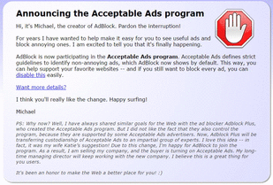

AdBlock、謎の新オーナーに買収される 49
ストーリー by headless
秘密 部門より
秘密 部門より
Webブラウザーの広告ブロック拡張機能として人気の高い「AdBlock」が謎の新オーナーに買収されたそうだ(TNW Newsの記事)。
AdBlockの最新版ではAdblock Plusの「Acceptable Ads(許容可能な広告)」プログラムに参加しており、デフォルトで「控えめな広告」が表示されるようになっている。AdBlockを最新版に更新すると、この旨を通知する開発者のMichael Gundlach氏からのメッセージが一度だけ表示されるのだが、メッセージの最後に会社を売却したことが記載されている。
売却先や売却理由についてTNWが問い合わせたところ、買収者から名前を出さないよう指示されているとして、AdBlock側は回答を拒否。Gundlach氏と会社との関係がなくなったことだけ知らされたとのことだ。AdBlockのWebサイトでは控えめな広告の表示に関する記述が追加されており、FAQから開発者の自己紹介部分が削除されている。
AdBlockの最新版ではAdblock Plusの「Acceptable Ads(許容可能な広告)」プログラムに参加しており、デフォルトで「控えめな広告」が表示されるようになっている。AdBlockを最新版に更新すると、この旨を通知する開発者のMichael Gundlach氏からのメッセージが一度だけ表示されるのだが、メッセージの最後に会社を売却したことが記載されている。
売却先や売却理由についてTNWが問い合わせたところ、買収者から名前を出さないよう指示されているとして、AdBlock側は回答を拒否。Gundlach氏と会社との関係がなくなったことだけ知らされたとのことだ。AdBlockのWebサイトでは控えめな広告の表示に関する記述が追加されており、FAQから開発者の自己紹介部分が削除されている。

Michael Gundlach氏からのメッセージ
{kind=link}
前に見た記事 (スコア:5, 興味深い)
この記事を読んで、下記の記事を思い出しました
スパム目的のChrome拡張機能買収が横行
http://www.itmedia.co.jp/news/articles/1401/20/news053.html [itmedia.co.jp]
Google Chromeの人気拡張機能が買収されてスパイウェア/アドウェアとして配布されている件。
http://mozilla-remix.seesaa.net/article/386898741.html [seesaa.net]
人気があるので良いアプリと信用していたものが、突然買収されて悪用されたら、防ぎようが無いですね。
せいぜい、悪評がないかこまめにチェックしておきましょうと言う程度でしょうか？